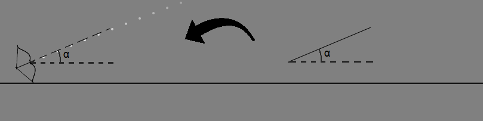

Regulile jocului
- Scopul jocului este să obții cât mai multe puncte într-un minut.
- Poți obține puncte nimerind ținta ce se află în mișcare. Vei primi:
- 1 punct: dacă săgeata este în urcare atunci cand se lovește de țintă,
- 2 puncte: dacă săgeata este în coborâre atunci cand se lovește de țintă.
- Nu poți pregăti o altă săgeată în timp ce una este deja din aer, trebuie să aștepți până când săgeata iese din marginile orizontale sau se lovește de țintă sau de podea.
Controalele jocului
- Jocul este jucat doar cu mouse-ul.
- Apasă click oriunde pe ecranul jocului si ține apăsat pentru a trasa un segment.
- În funcție de lungimea segmentului (pană la o lungime maximă) si de unghiul dintre segmentul trasat si axa orizontală, puterea si unghiul de lansare ale sageții se vor modifica.

- Dă drumul click-ului pentru a lansa săgeata!
- Atenție! Nu scoate mouse-ul din interiorul ecranului de joc în timp ce ții apăsat pe click.
Acum că știi regulile și cum să controlezi arcul, apasă pe butonul "Joacă!" și începe jocul!